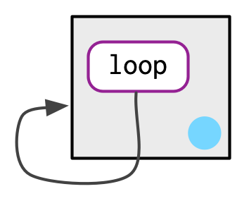

Workbook for completing quizzes and exercises from the “Foundations”
chapters of Advanced R,
second edition, with comparisons to solutions from Advanced R
Solutions.
2 Names and values
In R, it is important to understand the distinction between an object
and its name. Doing so will help you:
- More accurately predict the performance and memory usage of your
code.
- Write faster code by avoiding accidental copies, a major source of
slow code.
- Better understand R’s functional programming tools.
The goal of this chapter is to help you understand the distinction
between names and values, and when R will copy an object.
2 Quiz
- Given the following data frame, how do I create a new column called
“3” that contains the sum of
1 and 2? You may
only use $, not [[. What makes 1,
2, and 3 challenging as variable names?
df <- data.frame(runif(3), runif(3))
names(df) <- c(1, 2)
Answer: use the following code.
df2 <- data.frame(df, df$`1` + df$`2`)
names(df2) <- c(1, 2, 3)
Using numbers as names is problematic due to them being interpreted
as numeric constants by default.
- In the following code, how much memory does
y
occupy?
x <- runif(1e6)
y <- list(x, x, x)
Answer: 3 times the size of x, 24 MB. Note: this is incorrect, as
shown by obj_size and obj_addr:
obj_size(x)
#> 8.00 MB
obj_size(y)
#> 8.00 MB
obj_addr(y[[1]])
#> [1] "0x7f8ff1b20000"
obj_addr(y[[2]])
#> [1] "0x7f8ff1b20000"
obj_addr(y[[3]])
#> [1] "0x7f8ff1b20000"
- On which line does
a get copied in the following
example?
a <- c(1, 5, 3, 2)
obj_addr(a)
#> [1] "0x7f8f9e01d978"
b <- a
obj_addr(b)
#> [1] "0x7f8f9e01d978"
b[[1]] <- 10
obj_addr(b)
#> [1] "0x7f8fae3a9408"
Answer: the third line (copy-on-write). [copy-on-modify]
2.2.2 Exercises
- Explain the relationship between
a, b,
c and d in the following code:
a <- 1:10
b <- a
c <- b
d <- 1:10
Answer: a, b, and c all point to the same object (1:10). d points to
an identical object at a different address.
AR Solutions: a, b, and c
point to the same object (with the same address in memory). This object
has the value 1:10. d points to a different
object with the same value.
obj_addr(a)
#> [1] "0x7f8fabcfd468"
obj_addr(b)
#> [1] "0x7f8fabcfd468"
obj_addr(c)
#> [1] "0x7f8fabcfd468"
obj_addr(d)
#> [1] "0x7f8fbc7e2d50"
- The following code accesses the mean function in multiple ways. Do
they all point to the same underlying function object? Verify this with
lobstr::obj_addr().
mean
base::mean
get("mean")
evalq(mean)
match.fun("mean")
Check the obj_addr:
obj_addr(mean)
#> [1] "0x7f8fbbe59be0"
obj_addr(base::mean)
#> [1] "0x7f8fbbe59be0"
obj_addr(get("mean"))
#> [1] "0x7f8fbbe59be0"
obj_addr(evalq(mean))
#> [1] "0x7f8fbbe59be0"
obj_addr(match.fun("mean"))
#> [1] "0x7f8fbbe59be0"
Answer: they do.
AR Solutions: Yes, they point to the same object. We confirm this by
inspecting the address of the underlying function object.
- By default, base R data import functions, like
read.csv(), will automatically convert non-syntactic names
to syntactic ones. Why might this be problematic? What option allows you
to suppress this behaviour?
Answer: this could introduce problematic names, like 1.
Setting check.names = FALSE suppresses this behavior.
AR Solutions: Column names are often data, and the underlying
make.names() transformation is non-invertible, so the
default behaviour corrupts data. To avoid this, set
check.names = FALSE.
- What rules does
make.names() use to convert
non-syntactic names into syntactic ones?
Answer: from ?make.names:
The character “X” is prepended if necessary. All invalid characters
are translated to “.”. A missing value is translated to “NA”. Names
which match R keywords have a dot appended to them. Duplicated values
are altered by make.unique.
AR Solutions: A valid name must start with a letter or a dot (not
followed by a number) and may further contain numbers and underscores
("_"s are allowed since R version 1.9.0).
Three main mechanisms ensure syntactically valid names (see
?make.names):
- Names that do not start with a letter or a dot will be prepended
with an
"X". The same holds for names that begin with a dot
followed by a number.
- Additionally, non-valid characters are replaced by a dot.
- Reserved R keywords (see
?reserved) are suffixed by a
dot.
Interestingly, some of these transformations are influenced by the
current locale. From ?make.names:
The definition of a letter depends on the current locale, but only
ASCII digits are considered to be digits.
- I slightly simplified the rules that govern syntactic names. Why is
.123e1 not a syntactic name? Read ?make.names
for the full details.
Answer: from ?make.names:
A syntactically valid name consists of letters, numbers and the dot
or underline characters and starts with a letter or the dot not followed
by a number. Names such as “.2way” are not valid, and neither are the
reserved words.
AR Solutions: .123e1 is not a syntactic name, because it
starts with one dot which is followed by a number. This makes it a
double, 1.23.
2.3.6 Exercises
- Why is
tracemem(1:10) not useful?
Answer: this is tracing an ‘immutable’ object which will always have
the same address.
AR Solutions: When 1:10 is called an object with an
address in memory is created, but it is not bound to a name. Therefore,
the object cannot be called or manipulated from R. As no copies will be
made, it is not useful to track the object for copying.
- Explain why
tracemem() shows two copies when you run
this code. Hint: carefully look at the difference between this code and
the code shown earlier in the section.
rm(list = ls())
x <- c(1L, 2L, 3L)
tracemem(x)
#> [1] "<0x7f8fa8c97c88>"
x[[3]] <- 4
#> tracemem[0x7f8fa8c97c88 -> 0x7f8f9ec41548]: eval eval eval_with_user_handlers withVisible withCallingHandlers handle timing_fn evaluate_call <Anonymous> evaluate in_dir in_input_dir eng_r block_exec call_block process_group.block process_group withCallingHandlers process_file <Anonymous> <Anonymous> withCallingHandlers suppressMessages render_one FUN lapply sapply <Anonymous> <Anonymous> build_analysis_site stage_release
#> tracemem[0x7f8f9ec41548 -> 0x7f8faaec9518]: eval eval eval_with_user_handlers withVisible withCallingHandlers handle timing_fn evaluate_call <Anonymous> evaluate in_dir in_input_dir eng_r block_exec call_block process_group.block process_group withCallingHandlers process_file <Anonymous> <Anonymous> withCallingHandlers suppressMessages render_one FUN lapply sapply <Anonymous> <Anonymous> build_analysis_site stage_release
untracemem(x)
Answer: unclear. The behavior in R 4.2.0 seems to have changed, since
this code shows two copies:
rm(list = ls())
x <- c(1, 2, 3)
tracemem(x)
#> [1] "<0x7f8fad6ea168>"
y <- x
y[[3]] <- 4L
#> tracemem[0x7f8fad6ea168 -> 0x7f8fad6b3178]: eval eval eval_with_user_handlers withVisible withCallingHandlers handle timing_fn evaluate_call <Anonymous> evaluate in_dir in_input_dir eng_r block_exec call_block process_group.block process_group withCallingHandlers process_file <Anonymous> <Anonymous> withCallingHandlers suppressMessages render_one FUN lapply sapply <Anonymous> <Anonymous> build_analysis_site stage_release
y[[3]] <- 5L
untracemem(x)
AR Solutions: Initially the vector x has integer type.
The replacement call assigns a double to the third element of
x, which triggers copy-on-modify.
x <- c(1L, 2L, 3L)
tracemem(x)
#> <0x66a4a70>
x[[3]] <- 4
#> tracemem[0x55eec7b3af38 -> 0x55eec774cc18]:
We can avoid the copy by sub-assigning an integer instead of a
double:
x <- c(1L, 2L, 3L)
tracemem(x)
#> <0x55eec6940ae0>
x[[3]] <- 4L
Please be aware that running this code in RStudio will result in
additional copies because of the reference from the environment
pane.
- Sketch out the relationship between the following objects:
a <- 1:10
b <- list(a, a)
c <- list(b, a, 1:10)
print("first object")
#> [1] "first object"
obj_addr(a)
#> [1] "0x7f8fbdc233b8"
obj_addr(b[[1]])
#> [1] "0x7f8fbdc233b8"
obj_addr(b[[2]])
#> [1] "0x7f8fbdc233b8"
obj_addr(c[[2]])
#> [1] "0x7f8fbdc233b8"
print("second object")
#> [1] "second object"
obj_addr(b)
#> [1] "0x7f8fa8860cc8"
obj_addr(c[[1]])
#> [1] "0x7f8fa8860cc8"
print("third object")
#> [1] "third object"
obj_addr(c)
#> [1] "0x7f8fb8d15918"
print("fourth object (?)")
#> [1] "fourth object (?)"
obj_addr(c[[3]])
#> [1] "0x7f8fbe17e008"
Answer: four different objects with multiple names.
AR Solutions: a contains a reference to an address with
the value 1:10. b contains a list of two
references to the same address as a. c
contains a list of b (containing two references to
a), a (containing the same reference again)
and a reference pointing to a different address containing the same
value (1:10).
- What happens when you run this code? Draw a picture.
x <- list(1:10)
x[[2]] <- x
ref(x)
#> █ [1:0x7f8f9e5a1e08] <list>
#> ├─[2:0x7f8fcae7bfa0] <int>
#> └─█ [3:0x7f8faabb7640] <list>
#> └─[2:0x7f8fcae7bfa0]
Initially x is a list of one element, an int vector 1:10. Then a
second list element is added, which points to the original int
vector.
AR Solutions: The initial reference tree of x shows that
the name x binds to a list object. This object contains a
reference to the integer vector 1:10. When x
is assigned to an element of itself, copy-on-modify takes place and the
list is copied to a new address in memory. The list object previously
bound to x is now referenced in the newly created list
object. It is no longer bound to a name. The integer vector is
referenced twice.
2.4.1 Exercises
- In the following example, why are
object.size(y) and
obj_size(y) so radically different? Consult the
documentation of object.size().
y <- rep(list(runif(1e4)), 100)
object.size(y)
#> 8005648 bytes
obj_size(y)
#> 80.90 kB
Answer: object.size() “does not detect if elements of a
list are shared”, which is the case here. That is, it does not detect
the list has been replicated 100 times, and overestimates by a factor of
100 compared to object_size().
AR Solutions: object.size() doesn’t account for shared
elements within lists. Therefore, the results differ by a factor of ~
100.
- Take the following list. Why is its size somewhat misleading?
funs <- list(mean, sd, var)
obj_size(funs)
#> 17.55 kB
Answer: it doesn’t seem misleading to me, but the list includes the
function objects, not the return values. Also, it calculates the size
discarding the overlap between the functions. Per the code below, there
is some:
obj_size(mean) + obj_size(sd) + obj_size(var)
#> 18.08 kB
AR Solutions: All three functions are built-in to R as part of the
{base} and {stats} packages and hence always
available. So, what does it mean to measure the size of something that’s
already included in R?
(There’s typically a more general question about what you want to
know when you ask for the size of something — do you want to know how
much data you’d need to send to communicate the object to someone else
(e.g. serialise it), or do you want to know how much memory you’d free
if you deleted it?)
- Predict the output of the following code:
a <- runif(1e6)
obj_size(a) # 8,000,048 B ~ 8MB
#> 8.00 MB
# correct: from example above, runif(1e6) ~= 8MB
b <- list(a, a)
obj_size(b) # slightly larger than obj_size(a)
#> 8.00 MB
# correct: two lists containing numeric vectors
obj_size(a, b) # slightly larger than obj_size(b)
#> 8.00 MB
# wrong: a is entirely contained within b
b[[1]][[1]] <- 10
obj_size(b) # copy of b, same size
#> 16.00 MB
# wrong: double, since R copies an entire column, this adds the size of runif(1e6)
obj_size(a, b) # still mostly overlaps, slightly larger than previous obj_size(a, b)
#> 16.00 MB
# wrong: a is still entirely contained with b
b[[2]][[1]] <- 10
obj_size(b) # copy of b, same size
#> 16.00 MB
# wrong: same size since it's still 2 numeric vectors of 1e6 length
obj_size(a, b) # still mostly overlaps, slightly larger than previous obj_size(a, b)
#> 24.00 MB
# wrong: there is no longer any overlap, so the size of obj_size(a, b) = obj_size(a) = obj_size(b)
Answer: answers inline.
AR Solutions:
a <- runif(1e6):
- In R (on most platforms) a length-0 vector has 48 bytes of
overhead.
- A single double takes up an additional 8 bytes of memory.
- So, a 1 million double should take up 8,000,048 bytes.
For b <- list(a, a) both list elements contain
references to the same memory address. Therefore, no additional memory
is required for the second list element. The list itself requires 64
bytes, 48 bytes for an empty list and 8 bytes for each element
(obj_size(vector("list", 2))). This lets us predict
8,000,048 B + 64 B = 8,000,112 B.
b[[1]][[1]] <- 10: When we modify the first element
of b[[1]] copy-on-modify occurs. Both elements will still
have the same size (8,000,040 B), but the first one gets a new address
in memory. As b’s elements don’t share references anymore,
its object size adds up to the sum of the elements and the length-2
list: 8,000,048 B + 8,000,048 B + 64 B = 16,000,160 B (16 MB). The
second element of b still references the same address as
a, so the combined size of a and
b is the same as b.
b[[2]][[1]] <- 10: When we modify the second element
of b, this element will also point to a new memory address.
This does not affect the size of the list. However, as b
doesn’t share references with a anymore, the memory usage
of the combined objects increases.
2.5.3 Exercises
- Explain why the following code doesn’t create a circular list.
x <- list()
x[[1]] <- x
Answer: the name x is assigned to the empty list, and then the first
element of x is mapped to the object that x points to, the empty
list.
AR Solutions: In this situation copy-on-modify prevents the creation
of a circular list. Let us step through the details:
x <- list() # creates initial object
obj_addr(x)
#> [1] "0x55862f23ab80"
tracemem(x)
#> [1] "<0x55862f23ab80>"
x[[1]] <- x # Copy-on-modify triggers new copy
#> tracemem[0x55862f23ab80 -> 0x55862e8ce028]:
obj_addr(x) # copied object has new memory address
#> [1] "0x55862e8ce028"
obj_addr(x[[1]]) # list element contains old memory address
#> [1] "0x55862f23ab80"
- Wrap the two methods for subtracting medians into two functions,
then use the ‘bench’ package [@bench] to
carefully compare their speeds. How does performance change as the
number of columns increase?
x_medians <- function(ncol) {
x <- data.frame(matrix(runif(5 * 1e4), ncol = ncol))
medians <- vapply(x, median, numeric(1))
return(list(x = x, medians = medians))
}
df_medians <- function(x, medians) {
# subtract medians using data.frame method
for (i in seq_along(medians)) {
x[[i]] <- x[[i]] - medians[[i]]
}
x
}
ls_medians <- function(x, medians) {
y <- as.list(x)
for (i in seq_along(medians)) {
y[[i]] <- y[[i]] - medians[[i]]
}
y
}
# confirm they both work
xm <- x_medians(5)
head(df_medians(xm$x, xm$medians), 10)
head(as.data.frame(ls_medians(xm$x, xm$medians)), 10)
# benchmark
mark(df_medians(xm$x, xm$medians))
#> # A tibble: 1 × 6
#> expression min median `itr/sec` mem_alloc `gc/sec`
#> <bch:expr> <bch:tm> <bch:tm> <dbl> <bch:byt> <dbl>
#> 1 df_medians(xm$x, xm$medians) 117µs 232µs 3937. 391KB 3.11
mark(ls_medians(xm$x, xm$medians))
#> # A tibble: 1 × 6
#> expression min median `itr/sec` mem_alloc `gc/sec`
#> <bch:expr> <bch:tm> <bch:tm> <dbl> <bch:byt> <dbl>
#> 1 ls_medians(xm$x, xm$medians) 38.4µs 159µs 7028. 391KB 0
mark(as.data.frame(ls_medians(xm$x, xm$medians))) # as.data.frame introduces significant overhead
#> # A tibble: 1 × 6
#> expression min median `itr/sec` mem_alloc `gc/sec`
#> <bch:expr> <bch:tm> <bch:tm> <dbl> <bch:byt> <dbl>
#> 1 as.data.frame(ls_medians(xm$x, xm$medians)) 254µs 379µs 2598. 391KB 3.46
Answer: with 5 columns, the list method is about twice as fast.
xm <- x_medians(10)
mark(df_medians(xm$x, xm$medians))
#> # A tibble: 1 × 6
#> expression min median `itr/sec` mem_alloc `gc/sec`
#> <bch:expr> <bch:tm> <bch:tm> <dbl> <bch:byt> <dbl>
#> 1 df_medians(xm$x, xm$medians) 140µs 187µs 4777. 391KB 8.46
mark(ls_medians(xm$x, xm$medians))
#> # A tibble: 1 × 6
#> expression min median `itr/sec` mem_alloc `gc/sec`
#> <bch:expr> <bch:tm> <bch:tm> <dbl> <bch:byt> <dbl>
#> 1 ls_medians(xm$x, xm$medians) 44.8µs 119µs 7875. 391KB 2.11
xm <- x_medians(20)
mark(df_medians(xm$x, xm$medians))
#> # A tibble: 1 × 6
#> expression min median `itr/sec` mem_alloc `gc/sec`
#> <bch:expr> <bch:tm> <bch:tm> <dbl> <bch:byt> <dbl>
#> 1 df_medians(xm$x, xm$medians) 260µs 390µs 2583. 400KB 4.42
mark(ls_medians(xm$x, xm$medians))
#> # A tibble: 1 × 6
#> expression min median `itr/sec` mem_alloc `gc/sec`
#> <bch:expr> <bch:tm> <bch:tm> <dbl> <bch:byt> <dbl>
#> 1 ls_medians(xm$x, xm$medians) 56.8µs 186µs 5489. 392KB 2.12
With 10 columns, the list method is 3 times as fast. With 20, the
list method is 5 times as fast. So, the list method is near constant
time regardless of columns, whereas the data.frame method scales
linearly with the number of columns.
AR Solutions:
When working directly with the data frame, the execution time grows
quadratically with the number of columns in the input data. This is
because (e.g.) the first column must be copied n times, the second
column n-1 times, and so on. When working with a list, the execution
time increases only linearly.
Obviously in the long run, linear growth creates shorter run-times,
but there is some cost to this strategy — we have to convert between
data structures with as.list() and list2DF(). Even though this is fast
and probably doesn’t hurt much, the improved approach doesn’t really pay
off in this scenario until we get to a data frame that is about 300
columns wide (with the exact value depending on the characteristics of
the system running the code).
- What happens if you attempt to use
tracemem() on an
environment?
e <- rlang::env()
try(tracemem(e))
#> Error in tracemem(e) :
#> 'tracemem' is not useful for promise and environment objects
Answer: it throws an error!
AR Solutions: tracemem() cannot be used to mark and
trace environments.
The error occurs because “it is not useful to trace NULL,
environments, promises, weak references, or external pointer objects, as
these are not duplicated” (see ?tracemem). Environments are
always modified in place.
3 Vectors
This chapter discusses the most important family of data types in
base R: vectors. While you’ve probably already used many (if not all) of
the different types of vectors, you may not have thought deeply about
how they’re interrelated. In this chapter, I won’t cover individual
vectors types in too much detail, but I will show you how all the types
fit together as a whole. If you need more details, you can find them in
R’s documentation.
Vectors come in two flavours: atomic vectors and lists. They differ
in terms of their elements’ types: for atomic vectors, all elements must
have the same type; for lists, elements can have different types. While
not a vector, NULL is closely related to vectors and often
serves the role of a generic zero length vector. This diagram, which
we’ll be expanding on throughout this chapter, illustrates the basic
relationships:
Every vector can also have attributes, which you can
think of as a named list of arbitrary metadata. Two attributes are
particularly important. The dimension attribute turns
vectors into matrices and arrays and the class
attribute powers the S3 object system. While you’ll learn how to use S3
in Chapter 13, here you’ll learn about some of the most important S3
vectors: factors, date and times, data frames, and tibbles. And while 2D
structures like matrices and data frames are not necessarily what come
to mind when you think of vectors, you’ll also learn why R considers
them to be vectors.
rm(list = ls())
3.2.5 Exercises
- How do you create raw and complex scalars? (See
?raw
and ?complex.)
Answer: using either raw(), complex(), or
as.raw(), as.complex().
AR Solutions: In R, scalars are represented as vectors of length one.
However, there’s no built-in syntax like there is for logicals,
integers, doubles, and character vectors to create individual raw and
complex values. Instead, you have to create them by calling a function.
For raw vectors you can use either as.raw() or
charToRaw() to create them from numeric or character
values.
In the case of complex numbers, real and imaginary parts may be
provided directly to the complex() constructor. You can
create purely imaginary numbers (e.g.) 1i, but there is no
way to create complex numbers without +
(e.g. 1i + 1).
- Test your knowledge of the vector coercion rules by predicting the
output of the following uses of
c():
c(1, FALSE) # 1.0, 0.0 - double
#> [1] 1 0
c("a", 1) # "a", "1" - character
#> [1] "a" "1"
c(TRUE, 1L) # 1L, 1L - integer
#> [1] 1 1
typeof(c(1, FALSE))
#> [1] "double"
typeof(c("a", 1))
#> [1] "character"
typeof(c(TRUE, 1L))
#> [1] "integer"
Answer: guesses inline. [correct!]
AR Solutions:
c(1, FALSE) # will be coerced to double -> 1 0
c("a", 1) # will be coerced to character -> "a" "1"
c(TRUE, 1L) # will be coerced to integer -> 1 1
- Why is
1 == "1" true? Why is -1 < FALSE
true? Why is "one" < 2 false?
Answers:
1 == "1": the 1 is coerced to “1”-1 < FALSE: FALSE is coerced to 0- `“one” < 2: the 2 is coerced to “2”
AR Solutions: These comparisons are carried out by operator-functions
(==, <), which coerce their arguments to a
common type. In the examples above, these types will be character,
double and character: 1 will be coerced to
"1", FALSE is represented as 0
and 2 turns into "2" (and numbers precede
letters in lexicographic order (may depend on locale)).
- Why is the default missing value,
NA, a logical vector?
What’s special about logical vectors? (Hint: think about
c(FALSE, NA_character_).)
Answer: NA must be logical so that it can exist in a logical
vector.
AR Solutions: The presence of missing values shouldn’t affect the
type of an object. Recall that there is a type-hierarchy for coercion
from character → double → integer → logical. When combining
NAs with other atomic types, the NAs will be
coerced to integer (NA_integer_), double
(NA_real_) or character (NA_character_) and
not the other way round. If NA were a character and added
to a set of other values all of these would be coerced to character as
well.
- Precisely what do
is.atomic(),
is.numeric(), and is.vector() test for?
Answers:
is.atomic(x): tests if x is an atomic vector (logical,
integer, numeric, complex, character, and raw) - is FALSE
for listsis.numeric(x): tests if x is an atomic numeric
vectoris.vector(x, mode = "any"): tests if x is an atomic
vector OR a list or expression
AR Solutions: The documentation states that:
is.atomic() tests if an object is an atomic vector (as
defined in Advanced R) or is NULL (!).is.numeric() tests if an object has type integer or
double and is not of class factor, Date,
POSIXt or difftime.is.vector() tests if an object is a vector (as defined
in Advanced R) or an expression and has no attributes, apart
from names.
Atomic vectors are defined in Advanced R as objects of type
logical, integer, double, complex, character or raw. Vectors are defined
as atomic vectors or lists.
3.3.4 Exercises
- How is
setNames() implemented? How is
unname() implemented? Read the source code.
setNames
#> function (object = nm, nm)
#> {
#> names(object) <- nm
#> object
#> }
#> <bytecode: 0x7f8fab1d58e0>
#> <environment: namespace:stats>
unname
#> function (obj, force = FALSE)
#> {
#> if (!is.null(names(obj)))
#> names(obj) <- NULL
#> if (!is.null(dimnames(obj)) && (force || !is.data.frame(obj)))
#> dimnames(obj) <- NULL
#> obj
#> }
#> <bytecode: 0x7f8ffa932128>
#> <environment: namespace:base>
Answer: using names(), and dimnames() for
unname().
AR Solutions:
Because the data argument comes first, setNames() also
works well with the magrittr-pipe operator. When no first argument is
given, the result is a named vector (this is rather untypical as
required arguments usually come first):
unname() removes existing names (or dimnames) by setting
them to NULL.
- What does
dim() return when applied to a 1-dimensional
vector? When might you use NROW() or
NCOL()?
dim(1:3)
#> NULL
nrow(1:12)
#> NULL
NROW(1:12)
#> [1] 12
ncol(1:12)
#> NULL
NCOL(1:12)
#> [1] 1
Answers: NULL. NROW and NCOL
are useful when comparing NULL dimensional vectors with
matrices and arrays.
AR Solutions: From ?nrow:
dim() will return NULL when applied to a 1d
vector.
One may want to use NROW() or NCOL() to
handle atomic vectors, lists and NULL values in the same way as one
column matrices or data frames.
- How would you describe the following three objects? What makes them
different from
1:5?
x1 <- array(1:5, c(1, 1, 5))
x2 <- array(1:5, c(1, 5, 1))
x3 <- array(1:5, c(5, 1, 1))
x1
#> , , 1
#>
#> [,1]
#> [1,] 1
#>
#> , , 2
#>
#> [,1]
#> [1,] 2
#>
#> , , 3
#>
#> [,1]
#> [1,] 3
#>
#> , , 4
#>
#> [,1]
#> [1,] 4
#>
#> , , 5
#>
#> [,1]
#> [1,] 5
x2
#> , , 1
#>
#> [,1] [,2] [,3] [,4] [,5]
#> [1,] 1 2 3 4 5
x3
#> , , 1
#>
#> [,1]
#> [1,] 1
#> [2,] 2
#> [3,] 3
#> [4,] 4
#> [5,] 5
Answer: They have a 3-dimensional structure, arranged in different
ways, along the z, x, and y axis.
AR Solutions: These are all “one dimensional”. If you imagine a 3d
cube, x1 is in the x-dimension, x2 is in the
y-dimension, and x3 is in the z-dimension. In contrast to
1:5, x1, x2 and x3
have a dim attribute.
- An early draft used this code to illustrate
structure():
structure(1:5, comment = "my attribute")
#> [1] 1 2 3 4 5
But when you print that object you don't see the comment attribute.
Why? Is the attribute missing, or is there something else special about
it? (Hint: try using help.)
factor("green", levels = c("red", "amber", "green"))
#> [1] green
#> Levels: red amber green
dput(factor("green", levels = c("red", "amber", "green")))
#> structure(3L, levels = c("red", "amber", "green"), class = "factor")
Answer: print doesn’t display the attributes for arbitrary
structures, only defined classes, like factors (for example, above).
AR Solutions: The documentation states (see
?comment):
Contrary to other attributes, the comment is not printed (by print or
print.default).
Also, from ?attributes:
Note that some attributes (namely class, comment, dim, dimnames,
names, row.names and tsp) are treated specially and have restrictions on
the values which can be set.
3.4.5 Exercises
- What sort of object does
table() return? What is its
type? What attributes does it have? How does the dimensionality change
as you tabulate more variables?
a <- letters[1:3]
a_table <- table(a, sample(a))
a_table
#>
#> a a b c
#> a 1 0 0
#> b 0 1 0
#> c 0 0 1
typeof(a_table)
#> [1] "integer"
attributes(a_table)
#> $dim
#> [1] 3 3
#>
#> $dimnames
#> $dimnames$a
#> [1] "a" "b" "c"
#>
#> $dimnames[[2]]
#> [1] "a" "b" "c"
#>
#>
#> $class
#> [1] "table"
b <- letters[1:4]
b_table <- table(b, sample(b))
b_table
#>
#> b a b c d
#> a 0 0 1 0
#> b 0 1 0 0
#> c 1 0 0 0
#> d 0 0 0 1
attributes(b_table)
#> $dim
#> [1] 4 4
#>
#> $dimnames
#> $dimnames$b
#> [1] "a" "b" "c" "d"
#>
#> $dimnames[[2]]
#> [1] "a" "b" "c" "d"
#>
#>
#> $class
#> [1] "table"
Answer: an object of class “table”, an array of integer values, with
type “integer”. Attributes listed above, the dimensionality is always n
by n, where n is the number of variables tabulated.
AR Solutions: table() returns a contingency table of its
input variables. It is implemented as an integer vector with class
table and dimensions (which makes it act like an array).
Its attributes are dim (dimensions) and
dimnames (one name for each input column). The dimensions
correspond to the number of unique values (factor levels) in each input
variable.
- What happens to a factor when you modify its levels?
f1 <- factor(letters)
f1
#> [1] a b c d e f g h i j k l m n o p q r s t u v w x y z
#> Levels: a b c d e f g h i j k l m n o p q r s t u v w x y z
levels(f1) <- rev(levels(f1))
f1
#> [1] z y x w v u t s r q p o n m l k j i h g f e d c b a
#> Levels: z y x w v u t s r q p o n m l k j i h g f e d c b a
Answer: the factor will remain the same, but the attributes will
change. the factor and its levels are reversed.
AR Solutions: The underlying integer values stay the same, but the
levels are changed, making it look like the data has changed.
f1 <- factor(letters)
f1
#> [1] a b c d e f g h i j k l m n o p q r s t u v w x y z
#> Levels: a b c d e f g h i j k l m n o p q r s t u v w x y z
as.integer(f1)
#> [1] 1 2 3 4 5 6 7 8 9 10 11 12 13 14 15 16 17 18 19 20 21 22 23 24 25 26
levels(f1) <- rev(levels(f1))
f1
#> [1] z y x w v u t s r q p o n m l k j i h g f e d c b a
#> Levels: z y x w v u t s r q p o n m l k j i h g f e d c b a
- What does this code do? How do
f2 and f3
differ from f1?
f2 <- rev(factor(letters))
f2
#> [1] z y x w v u t s r q p o n m l k j i h g f e d c b a
#> Levels: a b c d e f g h i j k l m n o p q r s t u v w x y z
f3 <- factor(letters, levels = rev(letters))
f3
#> [1] a b c d e f g h i j k l m n o p q r s t u v w x y z
#> Levels: z y x w v u t s r q p o n m l k j i h g f e d c b a
Answer: both create a reversed list of letters. f3 also has reversed
levels but f2 does not. (correct!)
AR Solutions: For f2 and f3 either the
order of the factor elements or its levels are being reversed.
For f1 both transformations are occurring.
3.5.4 Exercises
- List all the ways that a list differs from an atomic vector.
Answers:
- Each element can be a different type
- Each element is a reference to an object
- List size can be smaller since elements are references
- Lists can contain other lists
AR Solutions: To summarise:
- Atomic vectors are always homogeneous (all elements must be of the
same type). Lists may be heterogeneous (the elements can be of different
types) as described in the introduction
of the vectors chapter.
- Atomic vectors point to one address in memory, while lists contain a
separate reference for each element. (This was described in the list
sections of the vectors and
the names
and values chapters.)
- Subsetting with out-of-bounds and
NA values leads to
different output. For example, [ returns NA
for atomics and NULL for lists. (This is described in more
detail within the subsetting
chapter.)
- Why do you need to use
unlist() to convert a list to an
atomic vector? Why doesn’t as.vector() work?
is.vector(list(1:4))
#> [1] TRUE
dput(as.vector(list(1:4)))
#> list(1:4)
Answer: a list is considered a vector by
as.vector().
AR Solutions: A list is already a vector, though not an atomic
one!
- Compare and contrast
c() and unlist() when
combining a date and date-time into a single vector.
d <- list(date = as.Date("2022-06-25"), datetime = as.POSIXct("2022-06-25 09:59:40 CDT"))
dput(d)
#> list(date = structure(19168, class = "Date"), datetime = structure(1656169180, class = c("POSIXct",
#> "POSIXt"), tzone = ""))
dput(c(d)) # nolint: unneeded_concatenation_linter.
#> list(date = structure(19168, class = "Date"), datetime = structure(1656169180, class = c("POSIXct",
#> "POSIXt"), tzone = ""))
dput(unlist(d))
#> c(date = 19168, datetime = 1656169180)
Answer: c() preserves the list structure.
unlist() converts both to double.
AR Solutions: Date and date-time objects are both built upon doubles.
While dates store the number of days since the reference date 1970-01-01
(also known as “the Epoch”) in days, date-time-objects (POSIXct) store
the time difference to this date in seconds.
date <- as.Date("1970-01-02")
dttm_ct <- as.POSIXct("1970-01-01 01:00", tz = "UTC")
# Internal representations
unclass(date)
#> [1] 1
unclass(dttm_ct)
#> [1] 3600
#> attr(,"tzone")
#> [1] "UTC"
As the c() generic only dispatches on its first
argument, combining date and date-time objects via c()
could lead to surprising results in older R versions (pre R 4.0.0):
# Output in R version 3.6.2
c(date, dttm_ct) # equal to c.Date(date, dttm_ct)
#> [1] "1970-01-02" "1979-11-10"
c(dttm_ct, date) # equal to c.POSIXct(date, dttm_ct)
#> [1] "1970-01-01 02:00:00 CET" "1970-01-01 01:00:01 CET"
In the first statement above c.Date() is executed, which
incorrectly treats the underlying double of dttm_ct (3600)
as days instead of seconds. Conversely, when c.POSIXct() is
called on a date, one day is counted as one second only.
We can highlight these mechanics by the following code:
# Output in R version 3.6.2
unclass(c(date, dttm_ct)) # internal representation
#> [1] 1 3600
date + 3599
#> "1979-11-10"
As of R 4.0.0 these issues have been resolved and both methods now
convert their input first into POSIXct and
Date, respectively.
c(dttm_ct, date)
#> [1] "1970-01-01 01:00:00 UTC" "1970-01-02 00:00:00 UTC"
unclass(c(dttm_ct, date))
#> [1] 3600 86400
#> attr(,"tzone")
#> [1] "UTC"
c(date, dttm_ct)
#> [1] "1970-01-02" "1970-01-01"
unclass(c(date, dttm_ct))
#> [1] 1 0
However, as c() strips the time zone (and other
attributes) of POSIXct objects, some caution is still
recommended.
(dttm_ct <- as.POSIXct("1970-01-01 01:00", tz = "HST"))
#> [1] "1970-01-01 01:00:00 HST"
attributes(c(dttm_ct)) # nolint: unneeded_concatenation_linter.
#> $class
#> [1] "POSIXct" "POSIXt"
#>
#> $tzone
#> [1] "HST"
A package that deals with these kinds of problems in more depth and
provides a structural solution for them is the vctrs package
which is also used throughout the tidyverse.
Let’s look at unlist(), which operates on list
input.
# Attributes are stripped
unlist(list(date, dttm_ct))
#> [1] 1 39600
We see again that dates and date-times are internally stored as
doubles. Unfortunately, this is all we are left with, when unlist strips
the attributes of the list.
To summarise: c() coerces types and strips time zones.
Errors may have occurred in older R versions because of inappropriate
method dispatch/immature methods. unlist() strips
attributes.
3.6.8 Exercises
- Can you have a data frame with zero rows? What about zero
columns?
# from data.frame() examples:
df <- data.frame(x = 1:3, y = 4:6, z = 7:9)
df
df[, FALSE]
df[FALSE, ]
df[FALSE, FALSE]
Answer: yes!
AR Solutions: Yes, you can create these data frames easily; either
during creation or via subsetting. Even both dimensions can be zero.
- What happens if you attempt to set rownames that are not
unique?
rownames(df)
#> [1] "1" "2" "3"
try(rownames(df) <- c("a", "a", "b"))
#> Warning: non-unique value when setting 'row.names': 'a'
#> Error in `.rowNamesDF<-`(x, value = value) :
#> duplicate 'row.names' are not allowed
Answer: error, duplicates not allowed.
AR Solutions: Matrices can have duplicated row names, so this does
not cause problems.
Data frames, however, require unique rownames and you get different
results depending on how you attempt to set them. If you set them
directly or via row.names(), you get an error. If you use
subsetting, [ automatically deduplicates.
- If
df is a data frame, what can you say about
t(df), and t(t(df))? Perform some experiments,
making sure to try different column types.
t(df)
#> [,1] [,2] [,3]
#> x 1 2 3
#> y 4 5 6
#> z 7 8 9
t(t(df))
#> x y z
#> [1,] 1 4 7
#> [2,] 2 5 8
#> [3,] 3 6 9
df2 <- data.frame(x = 1:3, y = c("a", "b", "c"), z = 4L:6L, stringsAsFactors = FALSE)
df2
t(df2)
#> [,1] [,2] [,3]
#> x "1" "2" "3"
#> y "a" "b" "c"
#> z "4" "5" "6"
t(t(df2))
#> x y z
#> [1,] "1" "a" "4"
#> [2,] "2" "b" "5"
#> [3,] "3" "c" "6"
Answer: t() coerces the vector types, so
t(t(df)) is the same as df only when all
columns are the same type.
AR Solutions: Both of t(df) and t(t(df))
will return matrices:
df <- data.frame(x = 1:3, y = letters[1:3])
is.matrix(df)
#> [1] FALSE
is.matrix(t(df))
#> [1] TRUE
is.matrix(t(t(df)))
#> [1] TRUE
The dimensions will respect the typical transposition rules:
dim(df)
#> [1] 3 2
dim(t(df))
#> [1] 2 3
dim(t(t(df)))
#> [1] 3 2
Because the output is a matrix, every column is coerced to the same
type. (It is implemented within t.data.frame() via
as.matrix() which is described below).
df
t(df)
#> [,1] [,2] [,3]
#> x "1" "2" "3"
#> y "a" "b" "c"
- What does
as.matrix() do when applied to a data frame
with columns of different types? How does it differ from
data.matrix()?
as.matrix(df)
#> x y
#> [1,] "1" "a"
#> [2,] "2" "b"
#> [3,] "3" "c"
as.matrix(df2)
#> x y z
#> [1,] "1" "a" "4"
#> [2,] "2" "b" "5"
#> [3,] "3" "c" "6"
data.matrix(df2)
#> x y z
#> [1,] 1 1 4
#> [2,] 2 2 5
#> [3,] 3 3 6
as.data.frame(data.matrix(df2))
as.data.frame(data.matrix(data.frame(x = 1:3, y = c(0, 0.5, 1), z = 4:6)))
Answer: as.matrix() coerces all elements to the same
type. data.matrix() coerces elements to either integer
(when possible) or double (when not).
AR Solutions: The type of the result of as.matrix
depends on the types of the input columns (see
?as.matrix):
The method for data frames will return a character matrix if there is
only atomic columns and any non-(numeric/logical/complex) column,
applying as.vector to factors and format to other non-character columns.
Otherwise the usual coercion hierarchy (logical < integer < double
< complex) will be used, e.g. all-logical data frames will be coerced
to a logical matrix, mixed logical-integer will give an integer matrix,
etc.
On the other hand, data.matrix will always return a
numeric matrix (see ?data.matrix()).
Return the matrix obtained by converting all the variables in a data
frame to numeric mode and then binding them together as the columns of a
matrix. Factors and ordered factors are replaced by their internal
codes. […] Character columns are first converted to factors and then to
integers.
We can illustrate and compare the mechanics of these functions using
a concrete example. as.matrix() makes it possible to
retrieve most of the original information from the data frame but leaves
us with characters. To retrieve all information from
data.matrix()’s output, we would need a lookup table for
each column.
4 Subsetting
R’s subsetting operators are fast and powerful. Mastering them allows
you to succinctly perform complex operations in a way that few other
languages can match. Subsetting in R is easy to learn but hard to master
because you need to internalise a number of interrelated concepts:
There are six ways to subset atomic vectors.
There are three subsetting operators, [[,
[, and $.
Subsetting operators interact differently with different vector
types (e.g., atomic vectors, lists, factors, matrices, and data
frames).
Subsetting can be combined with assignment.
Subsetting is a natural complement to str(). While
str() shows you all the pieces of any object (its
structure), subsetting allows you to pull out the pieces that you’re
interested in. For large, complex objects, I highly recommend using the
interactive RStudio Viewer, which you can activate with
View(my_object).
rm(list = ls())
4.2.6 Exercises
- Fix each of the following common data frame subsetting errors:
# nolint start: commented_code_linter.
# mtcars[mtcars$cyl = 4, ]
mtcars[mtcars$cyl == 4, ]
# mtcars[-1:4, ]
mtcars[-(1:4), ]
# mtcars[mtcars$cyl <= 5]
mtcars[mtcars$cyl <= 5, ]
# mtcars[mtcars$cyl == 4 | 6, ]
mtcars[mtcars$cyl == 4 | mtcars$cyl == 6, ]
# nolint end
Answer: fixed!
- Why does the following code yield five missing values? (Hint: why is
it different from
x[NA_real_]?)
x <- 1:5
x[NA]
#> [1] NA NA NA NA NA
x[NA_real_]
#> [1] NA
x[TRUE]
#> [1] 1 2 3 4 5
Answer: NA is a logical constant of length 1.
- What does
upper.tri() return? How does subsetting a
matrix with it work? Do we need any additional subsetting rules to
describe its behaviour?
x <- outer(1:5, 1:5, FUN = "*")
x
#> [,1] [,2] [,3] [,4] [,5]
#> [1,] 1 2 3 4 5
#> [2,] 2 4 6 8 10
#> [3,] 3 6 9 12 15
#> [4,] 4 8 12 16 20
#> [5,] 5 10 15 20 25
x[upper.tri(x)]
#> [1] 2 3 6 4 8 12 5 10 15 20
Answer: upper.tri() returns a matrix of logicals, which
can be used to subset the upper triangle. This is subsetting by matrix,
which is new.
- Why does
mtcars[1:20] return an error? How does it
differ from the similar mtcars[1:20, ]?
try(mtcars[1:20])
#> Error in `[.data.frame`(mtcars, 1:20) : undefined columns selected
mtcars[1:20, ]
Answer: mtcars[1:20] selects the first 20 columns, but
there are only 11. mtcars[1:20, ] selects the first 20 rows
of 32.
- Implement your own function that extracts the diagonal entries from
a matrix (it should behave like
diag(x) where
x is a matrix).
m <- matrix(ncol = 3, byrow = TRUE, c(
1, 4, 7,
2, 5, 8,
3, 6, 9
))
m
#> [,1] [,2] [,3]
#> [1,] 1 4 7
#> [2,] 2 5 8
#> [3,] 3 6 9
diag(m)
#> [1] 1 5 9
my_diag <- function(x) {
diag_element <- function(n, x) {
x[n, n]
}
vapply(seq_len(nrow(m)), diag_element, 1, x)
}
my_diag(m)
#> [1] 1 5 9
Answer: code above.
- What does
df[is.na(df)] <- 0 do? How does it
work?
Answer: sets the NA values in df to
0, by first selecting NA values then assigning
0.
df <- data.frame(x = c(1, 2, NA), y = c(4, NA, 6), z = c(NA, 8, 9))
df
df[is.na(df)] <- 0
df
Correct!
4.3.5 Exercises
- Brainstorm as many ways as possible to extract the third value from
the
cyl variable in the mtcars dataset.
mtcars$cyl[3]
#> [1] 4
mtcars$cyl[[3]]
#> [1] 4
mtcars[["cyl"]][[3]]
#> [1] 4
mtcars[3, 2]
#> [1] 4
mtcars[[3, 2]]
#> [1] 4
mtcars[["Datsun 710", "cyl"]]
#> [1] 4
mtcars[-c(1:2, 4:32), -c(1, 3:11)]
#> [1] 4
Answer: code above (some variations omitted). There are many
more.
- Given a linear model, e.g.,
mod <- lm(mpg ~ wt, data = mtcars), extract the residual
degrees of freedom. Then extract the R squared from the model summary
(summary(mod))
mod <- lm(mpg ~ wt, data = mtcars)
mod$df.residual
#> [1] 30
mod_sum <- summary(mod)
mod_sum$r.squared
#> [1] 0.7528328
mod_sum
#>
#> Call:
#> lm(formula = mpg ~ wt, data = mtcars)
#>
#> Residuals:
#> Min 1Q Median 3Q Max
#> -4.5432 -2.3647 -0.1252 1.4096 6.8727
#>
#> Coefficients:
#> Estimate Std. Error t value Pr(>|t|)
#> (Intercept) 37.2851 1.8776 19.858 < 2e-16 ***
#> wt -5.3445 0.5591 -9.559 1.29e-10 ***
#> ---
#> Signif. codes: 0 '***' 0.001 '**' 0.01 '*' 0.05 '.' 0.1 ' ' 1
#>
#> Residual standard error: 3.046 on 30 degrees of freedom
#> Multiple R-squared: 0.7528, Adjusted R-squared: 0.7446
#> F-statistic: 91.38 on 1 and 30 DF, p-value: 1.294e-10
Answer: code above.
4.5.9 Exercises
- How would you randomly permute the columns of a data frame? (This is
an important technique in random forests.) Can you simultaneously
permute the rows and columns in one step?
df <- data.frame(x = 1:5, y = 5:1, z = letters[1:5], row.names = 1:5)
df[, sample(ncol(df))]
df[sample(nrow(df)), sample(ncol(df))]
Answer: using sample(). Yes!
- How would you select a random sample of
m rows from a
data frame? What if the sample had to be contiguous (i.e., with an
initial row, a final row, and every row in between)?
sample_rows <- function(df, m, contiguous = FALSE) {
if (m > nrow(df)) {
stop("sample size '", m, "' is larger than the number of rows, '", nrow(df), "'")
}
if (contiguous) {
first_row <- sample(nrow(df) - m + 1, 1)
last_row <- first_row + m - 1
return(df[first_row:last_row, ])
}
df[sample(nrow(df), m), ]
}
sample_rows(df, 3)
sample_rows(df, 3, contiguous = TRUE)
try(sample_rows(df, 6))
#> Error in sample_rows(df, 6) :
#> sample size '6' is larger than the number of rows, '5'
Answer: code above.
- How could you put the columns in a data frame in alphabetical
order?
mtcars[sort(colnames(mtcars))]
Answer: using sort(colnames).
6 Functions
If you’re reading this book, you’ve probably already created many R
functions and know how to use them to reduce duplication in your code.
In this chapter, you’ll learn how to turn that informal, working
knowledge into more rigorous, theoretical understanding. And while
you’ll see some interesting tricks and techniques along the way, keep in
mind that what you’ll learn here will be important for understanding the
more advanced topics discussed later in the book.
rm(list = ls())
6 Quiz
Answer the following questions to see if you can safely skip this
chapter. You can find the answers in Section @ref(function-answers).
What are the three components of a function? a: arguments, code,
return value [body, arguments, environment]
What does the following code return? a: 11 [correct!]
x <- 10
f1 <- function(x) {
function() {
x + 10
}
}
f1(1)()
#> [1] 11
- How would you usually write this code? a:
1 + 2 * 3
[correct! … 1 + (2 * 3)]
`+`(1, `*`(2, 3))
- How could you make this call easier to read?
mean(c(1:10, NA), na.rm = TRUE) [correct!]
mean(, TRUE, x = c(1:10, NA)) # nolint: missing_argument_linter.
- Does the following code throw an error when executed? Why or why
not? a: no, due to lazy evaluation, the
stop() is never run
[correct! … second argument is never used]
f2 <- function(a, b) {
a * 10
}
f2(10, stop("This is an error!"))
#> [1] 100
What is an infix function? How do you write it? What’s a
replacement function? How do you write it? a:
function(x) x. ??? [see 6.8.3 and 6.8.4]
How do you ensure that cleanup action occurs regardless of how a
function exits? a: ??? [on.exit()]
6.2.5 Exercises
- Given a name, like
"mean", match.fun()
lets you find a function. Given a function, can you find its name? Why
doesn’t that make sense in R?
Answer: a function is an object and could have multiple names
pointing to it.
- It’s possible (although typically not useful) to call an anonymous
function. Which of the two approaches below is correct? Why?
function(x) 3()
#> function(x) 3()
#> <environment: 0x7f8f9b674710>
(function(x) 3)()
#> [1] 3
Answer: The second is correct, as the first is the form of defining a
function.
- A good rule of thumb is that an anonymous function should fit on one
line and shouldn’t need to use
{}. Review your code. Where
could you have used an anonymous function instead of a named function?
Where should you have used a named function instead of an anonymous
function?
Answer: in rdev::build_analysis_site(),
analysis_menu_item() is properly written as a named
function, where get_component() could be written as an
anonymous function, with dir_check_copy() and
dir_check_delete() potentially either.
- What function allows you to tell if an object is a function? What
function allows you to tell if a function is a primitive function?
Answer: is.function() and
is.primitive().
- This code makes a list of all functions in the base package.
objs <- mget(ls("package:base", all = TRUE), inherits = TRUE)
#> Warning in ls("package:base", all = TRUE): partial argument match of 'all' to 'all.names'
funs <- Filter(is.function, objs)
Use it to answer the following questions:
- Which base function has the most arguments?
- How many base functions have no arguments? What’s special about
those functions?
- How could you adapt the code to find all primitive functions?
fun_args <- data.frame(
name = names(funs),
args = unname(vapply(funs, function(x) length(formals(x)), 1L))
)
head(fun_args[order(fun_args$args, decreasing = TRUE), ], 10)
fun_args[fun_args$args == 0, ]
# check if all functions with 0 arguments are primitive
fun_args2 <- data.frame(
name = names(funs),
args = unname(vapply(funs, function(x) length(formals(x)), 1L)),
prim = unname(vapply(funs, is.primitive, TRUE))
)
fun_args2[fun_args2$args == 0, ]
Answers:
scan() has the most arguments, 22- most (but not all) are primitive functions (204 of 254)
- the
ls() in the original code could be expanded to
search all packages
- What are the three important components of a function?
Answer: the formals(), body() and
environment().
- When does printing a function not show the environment it was
created in?
Answer: when it is created in the global environment.
6.4.5 Exercises
- What does the following code return? Why? Describe how each of the
three
c’s is interpreted.
c <- 10
c(c = c)
#> c
#> 10
Answer: a named vector, c 10. The first and final c is a
variable. The second c is a function name. the third c is a name.
- What are the four principles that govern how R looks for
values?
Answer: name masking, functions versus variables, a fresh start,
dynamic lookup.
- What does the following function return? Make a prediction before
running the code yourself.
f <- function(x) {
f <- function(x) { # return value of this is 101
f <- function() {
x^2
}
f() + 1
}
f(x) * 2
}
f(10)
#> [1] 202
Answer: 202. Correct!
6.5.4 Exercises
- What important property of
&& makes
x_ok() work?
x_ok <- function(x) {
!is.null(x) && length(x) == 1 && x > 0
}
x_ok(NULL)
#> [1] FALSE
x_ok(1)
#> [1] TRUE
x_ok(1:3)
#> [1] FALSE
Answer: From the && docs, “The longer forms
evaluates left to right, proceeding only until the result is
determined.”
What is different with this code? Why is this behaviour undesirable
here?
x_ok <- function(x) {
!is.null(x) & length(x) == 1 & x > 0
}
x_ok(NULL)
#> logical(0)
x_ok(1)
#> [1] TRUE
x_ok(1:3)
#> [1] FALSE FALSE FALSE
Answer: “The shorter forms performs elementwise comparisons in much
the same way as arithmetic operators.” This is undesirable because the
intent of the function is to return TRUE or
FALSE.
- What does this function return? Why? Which principle does it
illustrate?
f2 <- function(x = z) {
z <- 100
x
}
f2()
#> [1] 100
Answer: 100, lazy evaluation. x = z isn’t evaluated
until x.
- What does this function return? Why? Which principle does it
illustrate?
y <- 10
# styler: off
f1 <- function(x = {y <- 1; 2}, y = 0) { # nolint brace_linter, semicolon_linter.
# styler: on
c(x, y)
}
f1()
#> [1] 2 1
y
#> [1] 10
Answer: c(2, 1). default arguments.
- In
hist(), the default value of xlim is
range(breaks), the default value for breaks is
"Sturges", and
range("Sturges")
#> [1] "Sturges" "Sturges"
Explain how hist() works to get a correct
xlim value.
Answer: from the docs, “Note that xlim is not
used to define the histogram (breaks), but only for plotting (when
plot = TRUE).” So, the breakpoints are calculated when the
object is created, and xlim is calculated when the
histogram is plotted, in the second step.
- Explain why this function works. Why is it confusing?
show_time <- function(x = stop("Error!")) {
stop <- function(...) Sys.time()
print(x)
}
show_time()
#> [1] "2022-07-24 10:47:44 CDT"
Answer: stop is redefined before x is
evaluated. This is a confusing use of lazy evaluation.
- How many arguments are required when calling
library()?
Answer: zero. library() uses missing() to
return the list of available packages if there are no arguments.
6.6.1 Exercises
- Explain the following results:
sum(1, 2, 3)
#> [1] 6
mean(1, 2, 3)
#> [1] 1
sum(1, 2, 3, na.omit = TRUE)
#> [1] 7
mean(1, 2, 3, na.omit = TRUE)
#> [1] 1
Answer:
- “
sum() returns the sum of all the values present in its
arguments.” The first example is straightforward. In the second sum
example, na.omit isn’t a valid argument (na.rm
is), so the TRUE value is passed to ...,
coerced to 1, and included in the sum.
mean() takes a single parameter, and passes on
remaining arguments to .... In both cases, the arguments
after the 1 are silently dropped. The correct form would be
mean(c(1, 2, 3)).
- Explain how to find the documentation for the named arguments in the
following function call:
plot(1:10, col = "red", pch = 20, xlab = "x", col.lab = "blue")
Answer: in other functions, specifically par() and
plot.default().
- Why does
plot(1:10, col = "red") only colour the
points, not the axes or labels? Read the source code of
plot.default() to find out.
localAxis <- function(..., col, bg, pch, cex, lty, lwd) Axis(...)
localBox <- function(..., col, bg, pch, cex, lty, lwd) box(...)
localWindow <- function(..., col, bg, pch, cex, lty, lwd) plot.window(...)
localTitle <- function(..., col, bg, pch, cex, lty, lwd) title(...)
Answer: plot.default() discards col and
several other arguments when calling Axis(),
box(), plot.window(), and
title().
6.7.5 Exercises
- What does
load() return? Why don’t you normally see
these values?
Answer: from the docs, load() returns “A character
vector of the names of objects created, invisibly.”
- What does
write.table() return? What would be more
useful?
Answer: it returns invisible(NULL). Returning the
written table or the argument x would be more useful.
- How does the
chdir parameter of source()
compare to with_dir()? Why might you prefer one to the
other?
Answer: both temporarily change the working directory.
chdir is preferable since this is expected behavior for the
function, unless you need to set a working directory other than the
directory containing file.
- Write a function that opens a graphics device, runs the supplied
code, and closes the graphics device (always, regardless of whether or
not the plotting code works).
with_png <- function(code, ...) {
png(...)
on.exit(dev.off(), add = TRUE, after = TRUE)
force(code)
}
with_png(
plot(1:10),
filename = "rendered/withpng-example.png",
# use 3 times default resolution which is close to retina display ppi (218-254 depending on model)
# https://support.apple.com/en-us/HT202471
width = 480 * 3, height = 480 * 3, res = 72 * 3
)
Answer: code example above.
- We can use
on.exit() to implement a simple version of
capture.output().
# nolint start: object_name_linter, undesirable_function_linter.
capture.output2 <- function(code) {
temp <- tempfile()
on.exit(file.remove(temp), add = TRUE, after = TRUE)
sink(temp)
on.exit(sink(), add = TRUE, after = TRUE)
force(code)
readLines(temp)
}
# nolint end
capture.output2(cat("a", "b", "c", sep = "\n"))
#> [1] "a" "b" "c"
Compare capture.output() to
capture.output2(). How do the functions differ? What
features have I removed to make the key ideas easier to see? How have I
rewritten the key ideas so they’re easier to understand?
Answer: capture.output2() has fewer features and uses
two separate calls to on.exit(). It simply returns the
output (by line) from the executed code, and highlights the key idea,
using sink() to capture output to a temporary file.
6.8.6 Exercises
- Rewrite the following code snippets into prefix form:
1 + 2 + 3
#> [1] 6
`+`(`+`(1, 2), 3)
#> [1] 6
1 + (2 + 3)
#> [1] 6
`+`(1, `+`(2, 3))
#> [1] 6
fxn <- function(x, n) if (length(x) <= 5) x[[5]] else x[[n]]
fxn(1:5, 2)
#> [1] 5
fxn(1:10, 2)
#> [1] 2
fxn2 <- function(x, n) `if`(`<=`(length(x), 5), `[[`(x, 5), `[[`(x, n))
fxn2(1:5, 2)
#> [1] 5
fxn2(1:10, 2)
#> [1] 2
Answer: inline above.
- Clarify the following list of odd function calls:
x <- sample(replace = TRUE, 20, x = c(1:10, NA))
y <- runif(min = 0, max = 1, 20)
cor(m = "k", y = y, u = "p", x = x)
Answers: improved code below.
x <- sample(c(1:10, NA), 20, replace = TRUE)
y <- runif(20)
cor(x, y, use = "pairwise.complete.obs", method = "kendall")
#> [1] 0.01527831
- Explain why the following code fails:
`modify<-` <- function(x, position, value) {
x[position] <- value
x
}
try(modify(get("x"), 1) <- 10)
#> Error in modify(get("x"), 1) <- 10 :
#> target of assignment expands to non-language object
#> Error: target of assignment expands to non-language object
Answer: as explained on stack
overflow, the error is caused when assigning to an object directly,
instead of a name that refers to the object (like x).
- Create a replacement function that modifies a random location in a
vector.
`modrand<-` <- function(x, value) {
x[sample(length(x), 1)] <- value
x
}
v <- 1:20
modrand(v) <- NA
v
#> [1] 1 2 NA 4 5 6 7 8 9 10 11 12 13 14 15 16 17 18 19 20
Answer: code above.
- Write your own version of
+ that pastes its inputs
together if they are character vectors but behaves as usual otherwise.
In other words, make this code work:
`+` <- function(x, y) {
if (is.character(x) && is.character(y)) {
return(paste0(x, y))
}
base::`+`(x, y)
}
1 + 2
#> [1] 3
#> [1] 3
"a" + "b"
#> [1] "ab"
#> [1] "ab"
rm(`+`)
Answer: code above.
- Create a list of all the replacement functions found in the base
package. Which ones are primitive functions? (Hint: use
apropos().)
# all replacement functions in base
fun_args2[endsWith(fun_args2$name, "<-"), ]$name
#> [1] ".rowNamesDF<-" "[[<-" "[<-" "@<-" "<-"
#> [6] "<<-" "$<-" "attr<-" "attributes<-" "body<-"
#> [11] "class<-" "colnames<-" "comment<-" "diag<-" "dim<-"
#> [16] "dimnames<-" "Encoding<-" "environment<-" "formals<-" "is.na<-"
#> [21] "length<-" "levels<-" "mode<-" "mostattributes<-" "names<-"
#> [26] "oldClass<-" "parent.env<-" "regmatches<-" "row.names<-" "rownames<-"
#> [31] "split<-" "storage.mode<-" "substr<-" "substring<-" "units<-"
# all replacement primitive functions in base
fun_args2[endsWith(fun_args2$name, "<-") & fun_args2$prim, ]$name
#> [1] "[[<-" "[<-" "@<-" "<-" "<<-"
#> [6] "$<-" "attr<-" "attributes<-" "class<-" "dim<-"
#> [11] "dimnames<-" "environment<-" "length<-" "levels<-" "names<-"
#> [16] "oldClass<-" "storage.mode<-"
Answer: while you could use apropos("<-"), I
leveraged the existing code from 6.2.5 #5.
- What are valid names for user-created infix functions?
Answer: they must begin and end with %, and can contain
any sequence of characters except %.
- Create an infix
xor() operator.
`%xor%` <- function(x, y) xor(x, y)
xor(0, 0)
#> [1] FALSE
xor(1, 0)
#> [1] TRUE
xor(1, 1)
#> [1] FALSE
0 %xor% 0
#> [1] FALSE
1 %xor% 0
#> [1] TRUE
1 %xor% 1
#> [1] FALSE
Answer: code above.
- Create infix versions of the set functions
intersect(),
union(), and setdiff(). You might call them
%n%, %u%, and %/% to match
conventions from mathematics.
`%n%` <- function(x, y) intersect(x, y)
`%u%` <- function(x, y) union(x, y)
`%s%` <- function(x, y) setdiff(x, y)
# taken from docs examples
(x <- c(sort(sample(1:20, 9)), NA))
#> [1] 1 2 4 5 7 11 15 16 20 NA
(y <- c(sort(sample(3:23, 7)), NA))
#> [1] 3 4 9 10 11 12 16 NA
x %u% y
#> [1] 1 2 4 5 7 11 15 16 20 NA 3 9 10 12
x %n% y
#> [1] 4 11 16 NA
x %s% y
#> [1] 1 2 5 7 15 20
y %s% x
#> [1] 3 9 10 12
Answer: code above.
7 Environments
The environment is the data structure that powers scoping. This
chapter dives deep into environments, describing their structure in
depth, and using them to improve your understanding of the four scoping
rules described in Section 6.4. Understanding environments is not
necessary for day-to-day use of R. But they are important to understand
because they power many important R features like lexical scoping,
namespaces, and R6 classes, and interact with evaluation to give you
powerful tools for making domain specific languages, like dplyr and
ggplot2.
rm(list = ls())
7.2.7 Exercises
- List three ways in which an environment differs from a list.
Answer:
- Every name in an environment must be unique
- Environment names are not ordered
- Environments have parents (except the empty environment)
- Environments are not copied when modified
- Create an environment as illustrated by this picture.

e1 <- env()
e1$loop <- e1
Answer: code above.
- Create a pair of environments as illustrated by this picture.

e2 <- env()
e3 <- env()
e2$loop <- e3
e3$dedoop <- e2
Answer: code above.
- Explain why
e[[1]] and e[c("a", "b")]
don’t make sense when e is an environment.
Answer: environment names are not ordered, and aren’t copied when
modified, so they aren’t subsettable.
- Create a version of
env_poke() that will only bind new
names, never re-bind old names. Some programming languages only do this,
and are known as single
assignment languages.
env_poke_new <- function(env, nm, value) {
if (!is.environment(env)) stop("env is not an enviornment")
if (nm %in% names(env)) stop("nm '", nm, "' already bound")
env[[nm]] <- value
}
e_test <- env(a = NULL, b = 2, c = "three")
env_poke_new(e_test, "d", "success")
try(env_poke_new(e_test, "a", "fail"))
#> Error in env_poke_new(e_test, "a", "fail") : nm 'a' already bound
env_print(e_test)
#> <environment: 0x7f8f9e924ac8>
#> Parent: <environment: 0x7f8f9b674710>
#> Bindings:
#> • a: <NULL>
#> • b: <dbl>
#> • c: <chr>
#> • d: <chr>
Answer: code above.
- What does this function do? How does it differ from
<<- and why might you prefer it?
rm(a)
#> Warning in rm(a): object 'a' not found
rebind <- function(name, value, env = caller_env()) {
if (identical(env, empty_env())) {
stop("Can't find `", name, "`", call. = FALSE)
} else if (env_has(env, name)) {
env_poke(env, name, value)
} else {
rebind(name, value, env_parent(env))
}
}
try(rebind("a", 10))
#> Error : Can't find `a`
(a <- 5)
#> [1] 5
rebind("a", 10)
a
#> [1] 10
Answer: <<- will assign a value to the name in the
global environment if the name is not found, rebind() does
not.
7.3.1 Exercises
- Modify
where() to return all environments that
contain a binding for name. Carefully think through what
type of object the function will need to return.
where <- function(name, env = caller_env()) {
if (identical(env, empty_env())) {
# Base case
stop("Can't find ", name, call. = FALSE)
} else if (env_has(env, name)) {
# Success case
env
} else {
# Recursive case
where(name, env_parent(env))
}
}
x <- 5
try(where("yyy"))
#> Error : Can't find yyy
where("x")
#> <environment: 0x7f8f9b674710>
where("mean")
#> <environment: namespace:base>
all_where <- function(name, env = caller_env(), found = list()) {
if (identical(env, empty_env())) {
# Base case
found
} else if (env_has(env, name)) {
# Success case
all_where(name, env_parent(env), append(env, found, after = 0))
} else {
# Recursive case
all_where(name, env_parent(env), found)
}
}
all_where("x")
#> [[1]]
#> <environment: 0x7f8f9b674710>
local({
x <- 10
all_where("x")
})
#> [[1]]
#> <environment: 0x7f8f9aef7ea8>
#>
#> [[2]]
#> <environment: 0x7f8f9b674710>
Answer: code above.
- Write a function called
fget() that finds only function
objects. It should have two arguments, name and
env, and should obey the regular scoping rules for
functions: if there’s an object with a matching name that’s not a
function, look in the parent. For an added challenge, also add an
inherits argument which controls whether the function
recurses up the parents or only looks in one environment.
fget <- function(name, env = caller_env(), inherits = TRUE) {
if (identical(env, empty_env())) {
# Base case
stop("Can't find ", name, call. = FALSE)
} else if (env_has(env, name) && is.function(env[[name]])) {
# Success case
env
} else if (inherits) {
# Recursive case
fget(name, env_parent(env))
} else {
stop("Can't find ", name, call. = FALSE)
}
}
try(fget("x"))
#> Error : Can't find x
fget("print")
#> <environment: namespace:base>
try(fget("print", inherits = FALSE))
#> Error : Can't find print
fget("all_where", inherits = FALSE)
#> <environment: 0x7f8f9b674710>
Answer: code above.
7.4.5 Exercises
- How is
search_envs() different from
env_parents(global_env())?
Answer: search_envs() includes the global environment.
env_parents(global_env()) doesn’t include the global
environment and also returns the empty environment (the top parent).
- Draw a diagram that shows the enclosing environments of this
function:
f1 <- function(x1) {
f2 <- function(x2) {
f3 <- function(x3) {
x1 + x2 + x3
}
f3(3)
}
f2(2)
}
f1(1)
Answer: No.
- Write an enhanced version of
str() that provides more
information about functions. Show where the function was found and what
environment it was defined in.
e_str <- function(object, ...) {
str(object, ...)
if (is.function(object)) {
message("fn_env():")
print(fn_env(object))
message("environment():")
print(environment(object))
}
}
e_str(print)
#> function (x, ...)
#> fn_env():
#> <environment: namespace:base>
#> environment():
#> <environment: namespace:base>
e_str(fget)
#> function (name, env = caller_env(), inherits = TRUE)
#> - attr(*, "srcref")= 'srcref' int [1:8] 1 9 14 1 9 1 1 14
#> ..- attr(*, "srcfile")=Classes 'srcfilecopy', 'srcfile' <environment: 0x7f8fb93f58b8>
#> fn_env():
#> <environment: 0x7f8f9b674710>
#> environment():
#> <environment: 0x7f8f9b674710>
Answer: code above.
7.5.5 Exercises
- Write a function that lists all the variables defined in the
environment in which it was called. It should return the same results as
ls().
my_ls <- function() {
vars <- sort(names(parent.frame()))
vars[!startsWith(vars, ".")]
}
ls()
#> [1] "a" "all_where" "e_str" "e_test" "e1" "e2"
#> [7] "e3" "env_poke_new" "fget" "my_ls" "rebind" "where"
#> [13] "x"
my_ls()
#> [1] "a" "all_where" "e_str" "e_test" "e1" "e2"
#> [7] "e3" "env_poke_new" "fget" "my_ls" "rebind" "where"
#> [13] "x"
Answer: code above.
8 Conditions
The condition system provides a paired set of tools
that allow the author of a function to indicate that something unusual
is happening, and the user of that function to deal with it. The
function author signals conditions with functions like
stop() (for errors), warning() (for warnings),
and message() (for messages), then the function user can
handle them with functions like tryCatch() and
withCallingHandlers(). Understanding the condition system
is important because you’ll often need to play both roles: signalling
conditions from the functions you create, and handle conditions
signalled by the functions you call.
R offers a very powerful condition system based on ideas from Common
Lisp. Like R’s approach to object-oriented programming, it is rather
different to currently popular programming languages so it is easy to
misunderstand, and there has been relatively little written about how to
use it effectively. Historically, this has meant that few people (myself
included) have taken full advantage of its power. The goal of this
chapter is to remedy that situation. Here you will learn about the big
ideas of R’s condition system, as well as learning a bunch of practical
tools that will make your code stronger.
I found two resources particularly useful when writing this chapter.
You may also want to read them if you want to learn more about the
inspirations and motivations for the system:
I also found it helpful to work through the underlying C code that
implements these ideas. If you’re interested in understanding how it all
works, you might find my
notes to be useful.
rm(list = ls())
8.2.4 Exercises
- Write a wrapper around
file.remove() that throws an
error if the file to be deleted does not exist.
safe_file_remove <- function(...) {
if (!file.exists(...)) stop("file '", ..., "' does not exist")
file.remove(...)
}
tmp <- tempfile()
file.create(tmp)
#> [1] TRUE
safe_file_remove(tmp)
#> [1] TRUE
file.remove(tmp)
#> Warning in file.remove(tmp): cannot remove file '/var/folders/vn/cw5f9gws42v9m8mdsds_zbl00000gp/T//
#> RtmpKRvXqX/file106237cee0c6e', reason 'No such file or directory'
#> [1] FALSE
try(safe_file_remove(tmp))
#> Error in safe_file_remove(tmp) :
#> file '/var/folders/vn/cw5f9gws42v9m8mdsds_zbl00000gp/T//RtmpKRvXqX/file106237cee0c6e' does not exist
Answer:
- What does the
appendLF argument to
message() do? How is it related to cat()?
Answer: appendLF controls whether or not a newline is
added to the message; by default, cat() does not add a
newline.
8.4.5 Exercises
- What extra information does the condition generated by
abort() contain compared to the condition generated by
stop() i.e. what’s the difference between these two
objects? Read the help for ?abort to learn more.
catch_cnd(stop("An error"))
#> <simpleError in force(expr): An error>
catch_cnd(abort("An error"))
#> <error/rlang_error>
#> Error:
#> ! An error
#> ---
#> Backtrace:
Answer: abort() includes the error message and backtrace
in the condition object. abort() uses the custom class
rlang_error.
- Predict the results of evaluating the following code
show_condition <- function(code) {
tryCatch(
error = function(cnd) "error",
warning = function(cnd) "warning",
message = function(cnd) "message",
{
code
NULL
}
)
}
show_condition(stop("!")) #> "error"
#> [1] "error"
show_condition(10) #> 10 [NULL]
#> NULL
show_condition(warning("?!")) #> "warning"
#> [1] "warning"
show_condition({
10
message("?")
warning("?!")
})
#> [1] "message"
#> 10
#> "message"
#> "warning"
Answer: predictions in comments. The prediction for
show_condition(10) was incorrect; the correct answer is
NULL as that’s what’s returned when there is no condition.
The final prediction was also incorrect; the tryCatch()
call stops further execution when the message() is
caught.
- Explain the results of running this code:
withCallingHandlers(
message = function(cnd) message("b"), # handler 1
withCallingHandlers(
message = function(cnd) message("a"), # handler 2
message("c")
)
)
#> b
#> a
#> b
#> c
Answer:
message("c") is caught, handler 2 is called- in handler 2,
message("a") is caught and handler 1 is
called
- handler 1 writes message
b
- code resumes and handler 2 writes message
a
message("c") propagates to the parent, is caught, and
handler 1 is called- handler 1 writes message
b
- code resumes and the code writes message
c
- Read the source code for
catch_cnd() and explain how it
works.
catch_cnd
#> function (expr, classes = "condition")
#> {
#> stopifnot(is_character(classes))
#> handlers <- rep_named(classes, list(identity))
#> eval_bare(rlang::expr(tryCatch(!!!handlers, {
#> force(expr)
#> return(NULL)
#> })))
#> }
#> <bytecode: 0x7f8feb86ec08>
#> <environment: namespace:rlang>
catch_cnd(stop("error"))
#> <simpleError in force(expr): error>
# replicate the core functionality
tryCatch(condition = function(x) x, force(stop("error")))
#> <simpleError in force(stop("error")): error>
Answer: catch_cnd() uses tryCatch() to
catch any condition and return itself using identity().
- How could you rewrite
show_condition() to use a single
handler?
show_condition2 <- function(code) {
tryCatch(
condition = function(cnd) {
if (is_error(cnd)) {
return("error")
}
if (is_warning(cnd)) {
return("warning")
}
if (is_message(cnd)) {
return("message")
}
},
{
code
NULL
}
)
}
show_condition2(stop("!"))
#> [1] "error"
show_condition2(10)
#> NULL
show_condition2(warning("?!"))
#> [1] "warning"
show_condition2({
10
message("?")
warning("?!")
})
#> [1] "message"
Answer: code above.
8.5.4 Exercises
- Inside a package, it’s occasionally useful to check that a package
is installed before using it. Write a function that checks if a package
is installed (with
requireNamespace("pkg", quietly = FALSE)) and if not,
throws a custom condition that includes the package name in the
metadata.
my_check_installed <- function(pkg) {
if (!requireNamespace(pkg, quietly = TRUE)) {
abort(
"error_not_found",
message = paste0("package '", pkg, "' not found"),
pkg = pkg
)
}
}
my_check_installed("rlang")
# NOTE: this code causes renv::dependencies() to mistakenly report package 'pkg' as a dependency
requireNamespace("pkg", quietly = FALSE)
#> Loading required namespace: pkg
err <- catch_cnd(my_check_installed("pkg"))
err
#> <error/error_not_found>
#> Error in `my_check_installed()`:
#> ! package 'pkg' not found
#> ---
#> Backtrace:
#> 1. rlang::catch_cnd(my_check_installed("pkg"))
#> 8. rdev (local) my_check_installed("pkg")
err$pkg
#> [1] "pkg"
Answer: code above. The question specifies to use
quietly = FALSE, but this approach makes more sense (to
me). The alternative is to catch the ‘Failed with error:’ message which
seems less reliable.
my_check_installed2 <- function(pkg) {
tryCatch(
condition = function(cnd) {
abort(
"error_not_found",
message = paste0("package '", pkg, "' not found"),
pkg = pkg
)
},
requireNamespace(pkg, quietly = FALSE)
)
}
my_check_installed2("rlang")
err2 <- catch_cnd(my_check_installed2("pkg"))
err2
#> <error/error_not_found>
#> Error in `value[[3L]]()`:
#> ! package 'pkg' not found
#> ---
#> Backtrace:
#> 1. rlang::catch_cnd(my_check_installed2("pkg"))
#> 8. rdev (local) my_check_installed2("pkg")
#> 9. base::tryCatch(...)
#> 10. base (local) tryCatchList(expr, classes, parentenv, handlers)
#> 11. base (local) tryCatchOne(expr, names, parentenv, handlers[[1L]])
#> 12. value[[3L]](cond)
err2$pkg
#> [1] "pkg"
The alternative version, my_check_installed2() works but
its Backtrace is harder to read.
- Inside a package you often need to stop with an error when something
is not right. Other packages that depend on your package might be
tempted to check these errors in their unit tests. How could you help
these packages to avoid relying on the error message which is part of
the user interface rather than the API and might change without
notice?
Answer: return custom error objects that aren’t dependent on the
error text (like in 8.5.3)
8.6.6 Exercises
- Create
suppressConditions() that works like
suppressMessages() and suppressWarnings() but
suppresses everything. Think carefully about how you should handle
errors.
suppressConditions <- function(expr) { # nolint: object_name_linter.
tryCatch(
error = function(cnd) invisible(cnd),
withCallingHandlers(
condition = function(cnd) {
cnd_muffle(cnd)
},
expr
)
)
}
sup <- suppressConditions({
message("processing...")
warning("something went wrong")
print("still running")
stop("error")
print("this shouldn't run")
})
#> [1] "still running"
str(sup)
#> List of 2
#> $ message: chr "error"
#> $ call : language withCallingHandlers(condition = function(cnd) { cnd_muffle(cnd) ...
#> - attr(*, "class")= chr [1:3] "simpleError" "error" "condition"
Answer: code above. Errors are not printed, but are returned,
invisibly.
- Compare the following two implementations of
message2error(). What is the main advantage of
withCallingHandlers() in this scenario? (Hint: look
carefully at the traceback.)
message2error <- function(code) {
withCallingHandlers(code, message = function(e) stop(e))
}
message2error2 <- function(code) {
tryCatch(code, message = function(e) stop(e))
}
Answer: message2error() shows the invocation of
message() in the traceback, but
message2error2() does not.
- How would you modify the
catch_cnds() definition if you
wanted to recreate the original intermingling of warnings and
messages?
Answer: as noted in Advanced
R Solutions, “It looks like Hadley wrote a part of the chapter after
the exercises, as the catch_cnds() function defined in the
chapter already solves this problem by storing all messages and warnings
in their original order within a list.”
- Why is catching interrupts dangerous? Run this code to find
out.
bottles_of_beer <- function(i = 99) {
message(
"There are ", i, " bottles of beer on the wall, ",
i, " bottles of beer."
)
while (i > 0) {
tryCatch(
Sys.sleep(1),
interrupt = function(err) {
i <<- i - 1 # nolint: undesirable_operator_linter.
if (i > 0) {
message(
"Take one down, pass it around, ", i,
" bottle", if (i > 1) "s", " of beer on the wall."
)
}
}
)
}
message(
"No more bottles of beer on the wall, ",
"no more bottles of beer."
)
}
Answer: this prevents user interrupts (control-c) from halting the
code, which in this case can be pretty annoying if run with the
defaults, requiring 99 interrupts (or just “Restart R”).
